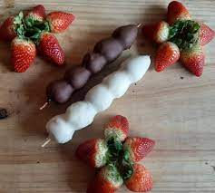

Imagine um espetinho de morango com chocolate que é uma verdadeira explosão de sabor e prazer para os sentidos. Cada mordida é uma jornada deliciosa que combina a doçura natural e suculenta do morango com a riqueza e a indulgência do chocolate.
Custo: R$ 4,50

Feche os olhos e imagine-se segurando um espetinho onde a natureza e a indulgência se unem em harmonia.As uvas verdes, com sua aparência de jóias verdes brilhantes, são pequenas esferas de frescor, cada uma escondendo uma explosão de suculência em seu interior.A verdadeira magia acontece quando o chocolate, em sua forma mais sedutora, envolve as uvas. O chocolate, derretido e generoso, cria uma camada suave e luxuosa ao redor de cada uva, adicionando uma doçura exuberante que se mistura com a acidez sutil da fruta.
Custo: R$ 4,50

O espetinho combina o doce dos morangos maduros com a refrescância das uvas verdes crocantes. Envolvendo ambas as frutas, uma generosa camada de chocolate adiciona um toque indulgente, criando um contraste perfeito de sabores. É uma delícia visual e gustativa que agrada a todos os sentidos.
Custo: R$ 5,50

O espetinho une o sabor inconfundível de morangos maduros à crocância das uvas verdes. Ambas as frutas são delicadamente banhadas em um suave e cremoso chocolate branco, conferindo um toque de doçura e elegância. Este trio de sabores se mescla harmoniosamente, proporcionando uma experiência gustativa leve e sofisticada. Ideal para quem aprecia combinações finas e memoráveis.
Custo: R$ 5,50
Morangos frescos são delicadamente banhados em um suave chocolate branco. O doce sabor do chocolate complementa perfeitamente a frescura do morango, criando uma combinação leve e deliciosa. Uma mordida e você é imediatamente transportado para um momento de puro prazer.
Custo: R$ 5,50